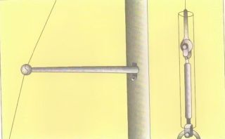
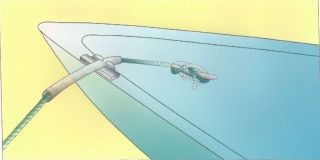
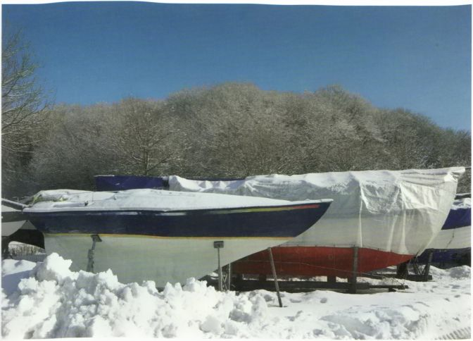

Durch ein paar vorbeugende Maßnahmen lässt sich der natürliche Verschleiß von Boot und Material so gering wie möglich halten.
► Segel sollten nicht länger als unbedingt nötig im Wind killen, das heißt flattern. Appretur und Kunststofffaser ermüden dabei schnell, das Segel verliert seine Form, Lattentaschen oder Achterlieksaum reißen ein. Deshalb sofort nach dem Anlegen alle Segel bergen.
Wenn das Großsegel an den Salingen scheuert, sollten diese mit Gummi- oder Kunststoffbällen umkleidet werden.

► Wantlaschen, Püttings oder Spanner sind Vorschotenfresser. Deshalb sollten sie, sofern die Vorschot daran scheuert, mit Kunststoffrohr ummantelt werden. Splintsicherungen am stehenden Gut und Schäkelverbindungen sollten regelmäßig kontrolliert werden.
► Festmacher sollten dort, wo sie durch Lippen oder Klüsen laufen, mit Tuch umnäht oder mit Gummi oder Kunststoff bezogen werden. Ein nur lose übergeschobener Schutz rutscht durch die ständige Reibung beiseite.

► Die Fallen sollten, wenn das Boot am Steg liegt, durch Gummistropps oder Bändsel vom Mast abgehalten werden. Einmal, weil die im Wind am Mast peitschenden Fallen ein nervtötendes Geräusch verursachen, zum anderen, weil sie die Lackierung beziehungsweise die Eloxierung von Alumasten beschädigen.
► Leinen - Schoten, Fallen oder Festmacher - mit Abrieb sofort durch neue ersetzen. Angerautes Kunstfasertauwerk kann bis zu 50% seiner Festigkeit verlieren.
Leinen, die mit Chemikalien (Lösungsmitteln) in Berührung gekommen sind, sofort gründlich mit Wasser abwaschen.
► Nach jedem Segeltörn die Bilge lenzen und Verunreinigungen des Bootskörpers mit Süßwasser abspülen. Reinigungsmittel dürfen aufgrund der deutschen Umweltschutzgesetzgebung nicht verwendet werden.
► Schrammen in einem Kunststoffrumpf, an denen Glasfasern zutage treten, müssen sofort - ohne Rücksicht auf Schönheit - mit geeignetem Spachtel ausgebessert werden, weil das Laminat sonst Wasser aufnimmt, was zu größeren Schäden im gesamten Laminat führen kann.
► Zu kontrollieren oder auch zu warten sind auf größeren Booten während der Saison Maschinenanlage, Elektrik, elektronische Instrumentierung und Sicherheitsausrüstung, Tank- und mögliche Gasanlagen.

Seemännisch wird das Ein- und Auswintern eines Bootes als Außerdienst- und Indienststellung bezeichnet.
Das Rigg: Bevor das Boot aus dem Wasser kommt, wird es abgetakelt, das heißt, das gesamte Rigg wird abgenommen. Den Mast so lagern, dass er nicht durchhängt. Das Drahttauwerk des stehenden Gutes auf Schäden hin durchsehen, besonders an den Eintrittsstellen in die Terminals und an den Pressungen der Kauschen. Das laufende Gut und sonstige Tauwerk mit Süßwasser abwaschen, ebenfalls kontrollieren und trocken lagern.
Den Rumpf mit Süßwasser reinigen und sofort den Bewuchs des Unterwasserschiffes entfernen. Später, nachdem er angetrocknet ist, wird das zur mühseligen Plackerei.
Dann den Rumpf aufpallen, das heißt auf passende Lagerböcke setzen, und so unter-und abstützen, dass er nicht durchhängt.
Ob in der Lagerhalle oder draußen unter einer Plane, stets ist für eine gute Durchlüftung des ganzen Schiffes zu sorgen, um Rost und Korrosion vorzubeugen. Luken, Schränke und Schubladen offen halten, Bodenbretter am besten aus dem Boot nehmen, auch alle beweglichen Einrichtungsgegenstände. Innen muss das Boot vollständig trocken sein, will man Frostschäden vermeiden.
Die Segel erforderlichenfalls leicht waschen und trocken lagern. Reparaturbedürftiges gleich jetzt zum Segelmacher bringen.
Der Motor: Bei seewassergekühlten Motoren (Einkreiskühlung) muss das Kühlsystem gründlich mit Süßwasser durchgespült werden, bei einer Zweikreiskühlung Frostschutzmittel in den Frischwasserkreislauf geben.
Bei Benzinmotoren schraubt man die Zündkerzen heraus und füllt durch jedes Kerzenloch Motoren- oder Rostschutzöl ein.
Anschließend die Kerzen - am besten neue - wiedereinschrauben.
Bei Dieselmotoren müssen die Einspritzdüsen entfernt werden. Das macht aber besser der Mechaniker. Den Außenborder nach Salzwasserbetrieb in Süßwasser laufen lassen und einige Sekunden Konservierungsmittel in den Luftfilter des Vergasers spritzen. Dann den Benzinschlauch abziehen und warten, bis der Motor von selbst stehen bleibt. Motorblock, Stecker, Klemmen und Kabel säubern und mit Konservierungsmittel einsprühen. Getriebeöl wechseln und nach Betriebsanleitung abschmieren.
Tank und Batterie: Fest eingebaute Brennstofftanks entleeren und mit Druckluft ausblasen oder mit CO2 auffüllen, um die Explosionsgefahr auszuschließen. Tragbare Tanks (und Gasflaschen) von Bord nehmen. Die Batterie ebenfalls herausnehmen und frostsicher lagern und gegebenenfalls nachladen. Am sichersten ist es, man gibt sie einem Wartungsdienst in fachgerechte Pflege.
Während die Überwasserschiffe von Holz- und Stahlyachten zur Konservierung regelmäßig lackiert werden müssen, dient der Anstrich bei Kunststoff- und Aluschiffen allenfalls der Schönheit. Das Unterwasserschiff hingegen muss in jedem Fall einen Schutzanstrich gegen Bewuchs mit einem sogenannten Hart- oder auch einem Copolymer-Antifouling erhalten. Die Farbenfabriken geben ausführliche Broschüren heraus über den richtigen Umgang, die richtige Anwendung und den richtigen Aufbau des Anstrichs für die verschiedenen Bootsbaumaterialien. Wenn man sich daran genau hält, kann man eigentlich kaum etwas falsch machen.
► Kunststoffrümpfe nicht mit Reinigungsmitteln säubern, die scharfe organische Lösungsmittel enthalten, oder schmirgeln.
► Zweikomponentenlacke nach dem Ansetzen nie unbeaufsichtigt stehen lassen. Sie können sich bis zur Selbstentzündung erhitzen. Gleiches gilt für mit Härter und Beschleuniger angesetztes Kunstharz. Es kann sogar explodieren.
Soll Zweikomponentenlack auf einen alten Anstrich aufgebracht werden, zunächst prüfen, ob der neue den alten nicht eventuell anlöst.
Die meist giftigen Hinterlassenschaften der Malerarbeiten, speziell das Antifouling, dürfen weder ins Wasser noch ins Erdreich gelangen. Deshalb ist der Arbeitsbereich weiträumig abzudecken. Der angefallene Abfall muss als Sondermüll entsorgt werden. Durchweg haben Marina- und Bootslagerbetreiber den auf ihrem Gelände anfallenden Sondermüll anzunehmen.
Vor gesundheitsschädlichem Schleifstaub oder gefährlichen Dämpfen schützt man sich durch eine Staub- oder Halbmaske mit austauschbaren Filtern.
Motor und Wellenanlage: Am Kühlsystem alle Lenzstopfen wieder einschrauben. Ölstand prüfen. Die Stopfbuchse der Propellerwelle neu packen, sofern sie nicht eine wassergeschmierte Lippendichtung hat.